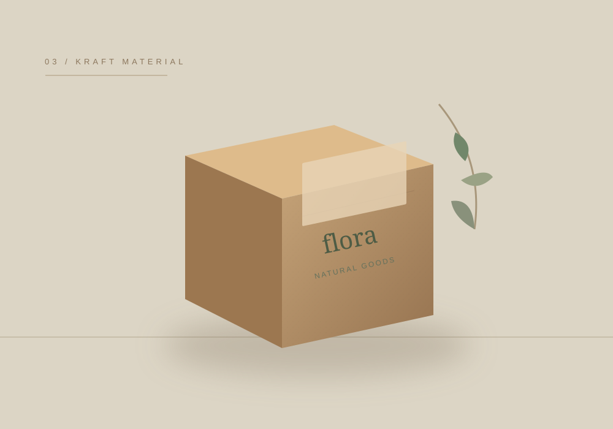

Giấy là nền tảng của thiết kế bao bì. Nhưng cùng một cái tên vật liệu, hiệu quả cuối cùng còn phụ thuộc định lượng, kết cấu, kích thước và cách gia công.
Đầu tiên, hãy chọn theo công năng
Đừng bắt đầu bằng câu hỏi “giấy nào đẹp nhất?”. Hãy đặt ba câu hỏi khác: sản phẩm nặng bao nhiêu, hộp sẽ được trưng bày hay vận chuyển, và khách hàng có cần mở đóng nhiều lần không?
Với hộp gấp cho hàng bán lẻ, độ cứng khi dựng hộp, chất lượng đường cấn và màu in thường quan trọng. Với hộp quà nặng hơn, lõi carton, lớp bồi và khay bên trong lại quyết định nhiều hơn đến cảm giác chắc chắn.
So sánh nhanh ba nhóm vật liệu
| Vật liệu | Điểm dễ nhận biết | Nên lưu ý khi dùng |
|---|---|---|
| Ivory | Bề mặt phù hợp nhiều thiết kế cần hình ảnh in rõ | Thử độ đứng hộp theo kích thước và tải trọng thực tế |
| Duplex | Được dùng cho nhiều dạng hộp giấy gấp | Kiểm tra cả mặt ngoài, mặt trong của đúng loại giấy |
| Kraft | Nền giấy nâu tự nhiên, thẩm mỹ mộc | Kiểm tra độ tương phản logo, màu in và bề mặt |
01. Giấy Ivory — khi bề mặt in cần chỉn chu
Ivory thường được cân nhắc cho hộp mỹ phẩm, hộp sản phẩm chăm sóc cá nhân và nhiều loại hộp trưng bày. Khi lựa chọn, ngoài hình ảnh in thử, nên kiểm tra vết gấp ở nắp và các cạnh cùng khả năng giữ form của chính mẫu hộp.
Định lượng phù hợp không có công thức chung. Một hộp nhỏ và một hộp cao, mảnh có thể cần hai phương án khác nhau dù sử dụng cùng nhóm giấy.
02. Giấy Duplex — cân đối giữa bề mặt và nhu cầu sản xuất
Duplex xuất hiện trong nhiều giải pháp hộp giấy gấp và bao bì bán lẻ. Tuy nhiên các chủng loại khác nhau có bề mặt mặt sau khác nhau; nên đối chiếu mẫu giấy đang được xưởng sử dụng trước khi quyết định in cả mặt trong.
Đừng lấy ảnh mẫu trên màn hình làm tiêu chuẩn duyệt màu. Cùng màu thiết kế, bề mặt giấy và lớp phủ khác nhau có thể cho cảm nhận rất khác.
03. Giấy Kraft — khi màu nền là một phần nhận diện

Kraft tạo cảm giác tự nhiên và gần gũi. Nhưng màu giấy không phải nền trắng: mực in trên Kraft có thể trầm đi, đặc biệt ở các chi tiết nhỏ hoặc màu sáng. Nên yêu cầu mẫu in trên đúng nền giấy trước khi khóa màu nhận diện.
Bốn lỗi khi chọn giấy dễ làm đội chi phí
- Chọn theo định lượng mà chưa kiểm tra hình khối sau khi bế gấp.
- Giả định bề mặt vật liệu giống ảnh sản phẩm trên website.
- Chốt màu thiết kế khi chưa xét nền giấy và cán phủ.
- Nhầm giấy làm hộp ngoài với vật liệu được phép tiếp xúc trực tiếp thực phẩm.
Khi nào cần đối chiếu với nhà in?
Khi đã có sản phẩm, kích thước và số lượng, hãy gửi thông tin để so sánh phương án vật liệu trên cùng một kết cấu. Trang in hộp giấy theo yêu cầu tại Tân Hoa Mai tổng hợp các nhóm giấy, kiểu hộp và gia công để bạn tham khảo trước khi yêu cầu báo giá.
Đừng chọn giấy bằng cảm giác.
Kiểm tra tải trọng và yêu cầu sử dụng trước khi chốt vật liệu.